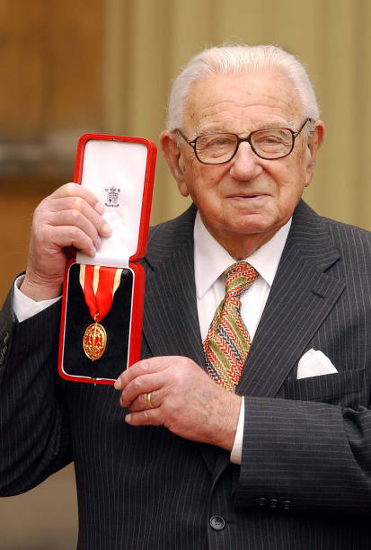

Sir Nicholas Winton (1909 – 2015)
Bối cảnh: Sau khi Đức Quốc xã sáp nhập Sudetenland, hàng nghìn gia đình Do Thái ở Tiệp Khắc lâm vào cảnh nguy hiểm.
Nội dung: Winton tổ chức 8 chuyến tàu đưa 669 trẻ em từ Praha đến London an toàn. Ông tự vận động chính phủ Anh cấp visa, tìm gia đình nhận nuôi và thu tiền thế chân.
Ý nghĩa: Đây là thành tựu lớn nhất cuộc đời ông — cứu sống 669 sinh mạng và tạo ra hơn 6.000 hậu duệ ngày nay.
Bối cảnh: Suốt 50 năm, Winton không kể cho ai về hành động của mình, kể cả vợ con.
Nội dung: Vợ ông là Grete tìm thấy cuốn sổ tay cũ trên gác mái, ghi danh sách 669 trẻ em. Bà liên hệ với BBC và chương trình That's Life! đã phát sóng câu chuyện.
Ý nghĩa: Khoảnh khắc hàng chục người trong khán phòng đứng dậy — chính là những đứa trẻ ông từng cứu — đã trở thành một trong những khoảnh khắc xúc động nhất lịch sử truyền hình.
Bối cảnh: Sau khi câu chuyện được công bố, Winton nhận được sự công nhận rộng rãi trên toàn thế giới.
Nội dung: Nữ hoàng Elizabeth II phong tặng ông danh hiệu Hiệp sĩ (Sir) vì những đóng góp nhân đạo.
Ý nghĩa: Sự ghi nhận chính thức từ Hoàng gia Anh cho những đóng góp thầm lặng suốt 50 năm của ông.
Nội dung: Winton từng được trao tặng MBE (Member of the Order of the British Empire) — một trong những huân chương cao quý của Anh Quốc.
Ý nghĩa: Sự ghi nhận sớm cho những đóng góp của ông, trước khi câu chuyện đầy đủ được công bố.

Sir Nicholas Winton cầm hộp huân chương MBE
Winton không bao giờ coi mình là anh hùng. Ông chỉ nói: "Tôi chỉ làm điều mình có thể làm."